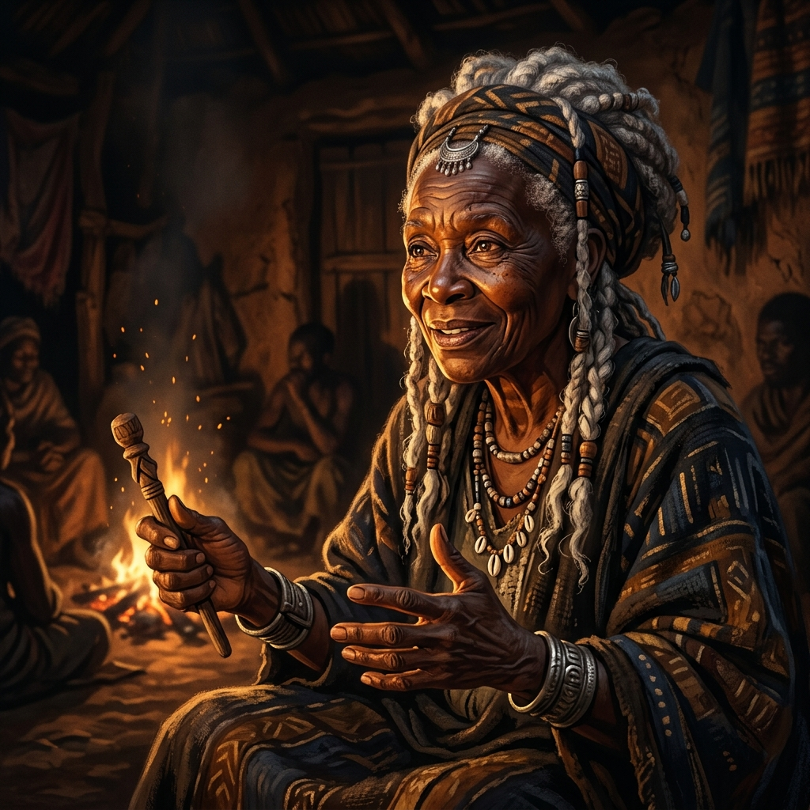

A visual media ecology simulation
One message has been entrusted to you. Carry it through five transformations of the word — from the firelight council to typographic print, broadcast television, algorithmic feeds, and generative AI. Every choice restructures your sensorium, and every medium charges for carriage. At the end, we'll see what survived — and whether anyone still stands behind it.

Phases I–III after Walter J. Ong (1982), Orality and Literacy. Phases IV–V proposed by Micah J. Miner, Beyond Secondary Orality: Tertiary Algorithmicity & Pedagogical Friction.
The journey's end
*Note: All scores, stats, and achievements are illustrative models of the pedagogical friction framework, not validated learning assessment instruments.
For four rounds, this simulation taught you to protect fidelity — the exact wording. The final round revealed a variable you were never shown: origination. When algorithms can produce the symbolic environment itself, a message can be word-perfect and authored by no one. What this condition does to humanistic agency, and to the student sensorium, is an open empirical question — the core question this research pursues.
Framework: Miner, extending Ong (1982). micahminer.com
Theoretical deep dive
| Phase | Core Technology | Media Environment | Human Role | Cognitive Consequence |
|---|---|---|---|---|
| Primary Orality | Voice (sound) | Ephemeral, face-to-face, localized | Sole creators, active dialogue | Situational, formulaic, communal mind |
| Literacy & Print | Writing / printing press | Durable, spatialized, distanced | Sole creators, individual reader | Abstract, linear, individual interiority |
| Secondary Orality | Electronic broadcast (TV/radio) | Immediate, mass-mediated, centralized | Sole creators, mass simultaneous audience | Scripted spontaneity, broadcast unity |
| Algorithmic Secondary Orality | Social feeds & recommendation systems | Curated, personalized, fragmented | Creators; circulation delegated to machines | Secondary oral, under algorithmic conditions |
| Tertiary Algorithmicity | Generative AI (LLMs) | Synthetic, saturated, instant | Optional creators; algorithms can produce and circulate | Open empirical question — the focus of this research |
Think you can hold the boundaries? Ten scenarios, including the hard cases at the seams between phases.